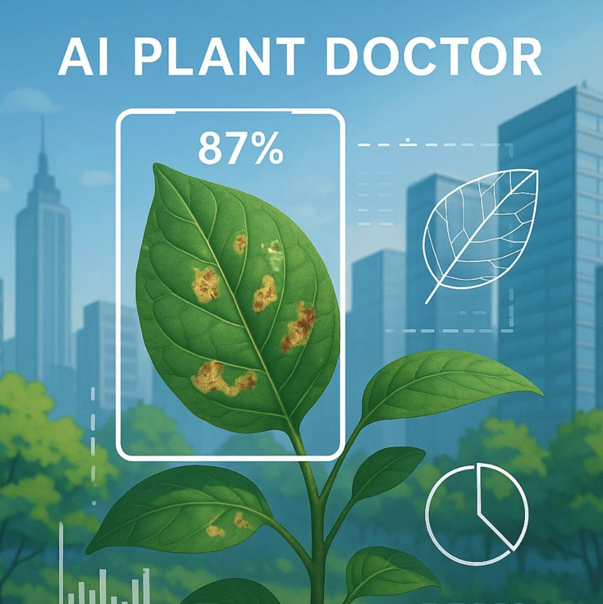
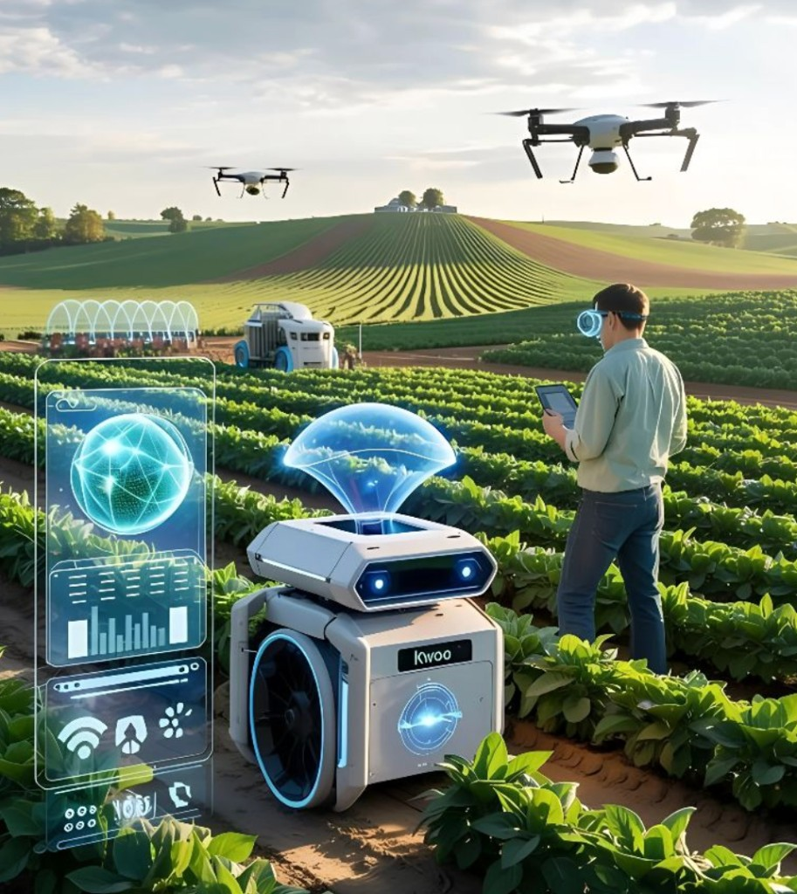

Disease detection
Cameras and AI scan leaves and crops for spots and discoloration before damage spreads across the field.
Smart farming
Artificial Intelligence (AI) is transforming agriculture by helping farmers improve productivity and reduce costs. AI can detect crop diseases, predict weather, monitor soil health, and automate irrigation systems. It is also used in drones and smart machines to monitor crops, control pests, and support precision farming. AI helps farmers make better decisions through yield prediction, market forecasting, and farm management tools, while also reducing water, fertilizer, and resource waste for more sustainable farming.
From leaves on the ground to drones in the sky.

Cameras and AI scan leaves and crops for spots and discoloration before damage spreads across the field.

After diagnosis, AI suggests the right pesticide or organic treatment, dosage, and when to apply it — less guesswork and waste.
Sensors and AI map dry zones. Drones water only where needed, saving water and labour.

AI plans drone flights to spread fertilizer where crops need it most — better yields, lower runoff.
Smart agriculture in pictures.